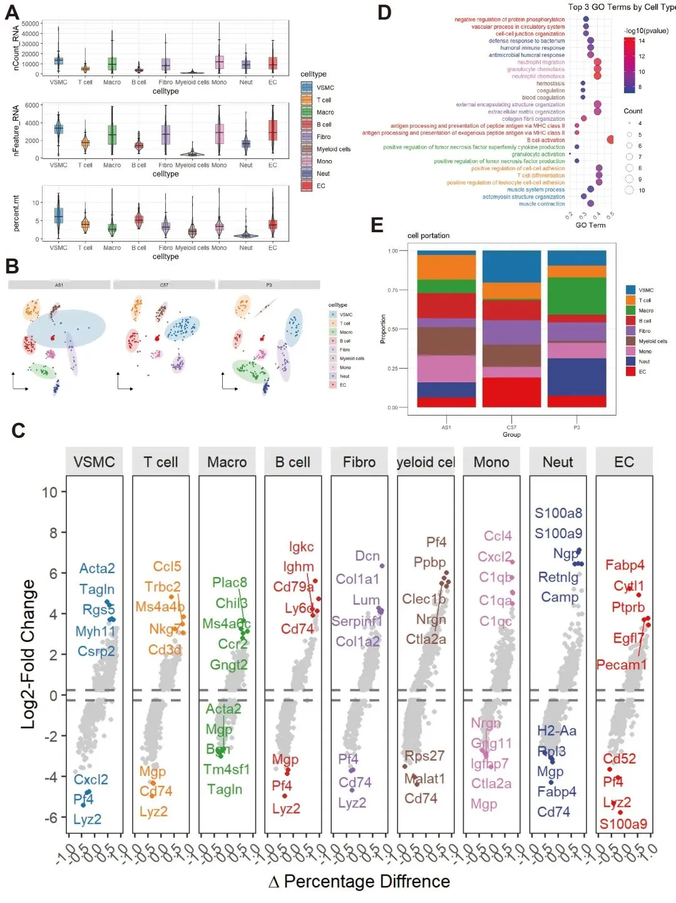

单细胞Figure 1常见图表（R语言版）
原文：https://mp.weixin.qq.com/s?__biz=MzAwMzIzOTk5OQ==&mid=2247538071&idx=2&sn=4c8baaa1a4ee5f53592c8426dfcb8762&chksm=9b3c2cc7ac4ba5d191da258084ad94f51a78b94787ec5de07bfaa155ebd25ac3d12a6dbe9669#rd 合集：单细胞教程全收录

写在前面

 近年来随着单细胞测序技术的日益普及，普通的分析及可视化 已经越来越不能够满足各位的分析以及可视化需求。信、达、雅的全方位要求使得现在单细胞可视化越来越卷 ，本文整理了单细胞Figure 1的常见图表 ，能够展示单细胞数据的质控数据小提琴图、降维图、细胞比例堆积柱状图、富集分析气泡图、marker基因散点图等。更多单细胞可视化教程可参考：单细胞图片改造计划更多学习资料可见：
龙年订阅须知
近年来随着单细胞测序技术的日益普及，普通的分析及可视化 已经越来越不能够满足各位的分析以及可视化需求。信、达、雅的全方位要求使得现在单细胞可视化越来越卷 ，本文整理了单细胞Figure 1的常见图表 ，能够展示单细胞数据的质控数据小提琴图、降维图、细胞比例堆积柱状图、富集分析气泡图、marker基因散点图等。更多单细胞可视化教程可参考：单细胞图片改造计划更多学习资料可见：
龙年订阅须知
《NC》代码复现| scRNA-seq揭示人纤维化皮肤病中的成纤维细胞异质性和间充质成纤维细胞增加
《Nature Communications》| scRNA-seq揭示头颈癌早期转移过程中潜在的免疫逃避机制
代码复写《Developmental Cell》|利用scRNA-seq对新生儿~成人肝脏发育和成熟的时间分析
优惠订阅资料或参与课程请联系客服微信[Biomamba_zhushou] 更多生信教程可见：为什么我们敢开放终身订阅 -Biomamba
更多生信教程可见：为什么我们敢开放终身订阅 -Biomamba

所见即所得
一如既往地，我们整理好了测试文件和代码的html文件，供大家翻阅学习：
分析输出图片示例：

解锁前需阅读：龙年订阅须知
提取码联系客服领取：
本推送教程、测试文件下载链接：
https://pan.baidu.com/s/1nH-JuazShVbTAfzn5VSbQg
提取码请联系客服微信获取：